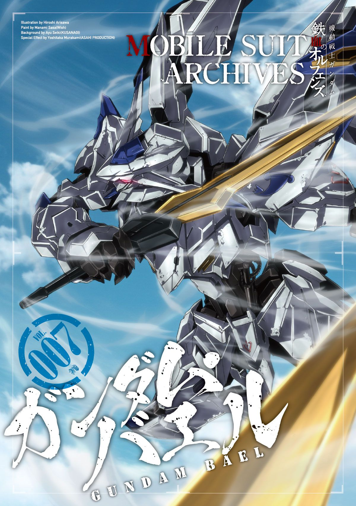

鋼彈・巴耶爾（Gundam Bael）象徵著力量與支配的原初象徵。作為「七十二機鋼彈」中最早被啟動的一機，巴耶爾是三百年前「厄祭戰爭」時期由阿格尼卡‧卡伊魯魯（Agnika Kaieru）所駕駛的傳說之機。它不僅是技術的結晶，更是權力與信仰的象徵。阿格尼卡以這台機體終結了人類與機械之間的戰爭，並以其名義建立了「格耶爾霍恩（Gjallarhorn）」制度。自此，巴耶爾被視為「神機」，其出現象徵著統治的正統性。
在劇中後期，格耶爾霍恩的現任領袖麥吉利斯・法利德（McGillis Fareed）為了改變腐敗的體制，奪取了沉睡於本部地下深處的巴耶爾。當他駕駛這台傳說中的鋼彈現身戰場時，整個組織的高層與士兵皆震懾於其威嚴，因為「只有被巴耶爾承認之人，才是格耶爾霍恩真正的主宰」。這種信仰根深蒂固，使得巴耶爾不僅是一台兵器，更是一種「權力的化身」。
巴耶爾的設計延續了厄祭戰爭時代的「阿賴耶識系統」，具備卓越的反應速度與近戰性能。其最大特色是背部展開的雙翼狀推進器與兩把專屬兵裝——巴耶爾之劍（Bael Sword）。這對藍白色長劍象徵著天與地的審判，使巴耶爾在戰場上以迅雷之勢斬裂敵陣。儘管它沒有搭載現代化重火器，但在高手駕馭下仍能以純粹的速度與劍技壓制一切對手。
最終，巴耶爾成為了理想與野心交錯的象徵。麥吉利斯企圖以它重現阿格尼卡的榮光，卻終究被現實與人心背叛。當巴耶爾孤獨地立於殘破的戰場時，它不再是勝利的象徵，而是一段被權力與信仰扭曲的悲劇——一如鐵血之名，榮光終將染上鮮紅。